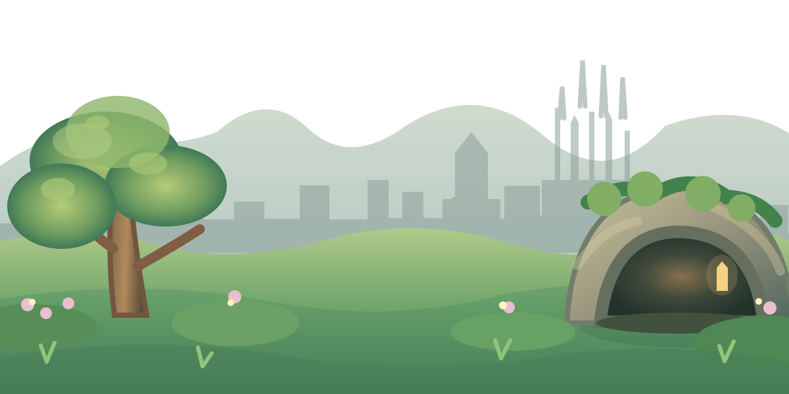

ADRIÁN HUB · LABORATORIO DEL JARDÍN
Volver al Hub ↗Nuestro dragoncillo
Primera prueba animada, independiente de nuestro bosque.

Escena ilustrada · Día tranquilo
Haz que cobre vida
Tócalo o elige una animación.
🔒 Este laboratorio no escribe ni borra sesiones, progreso, medallas, estrellas o árboles. Todo es visual y temporal.